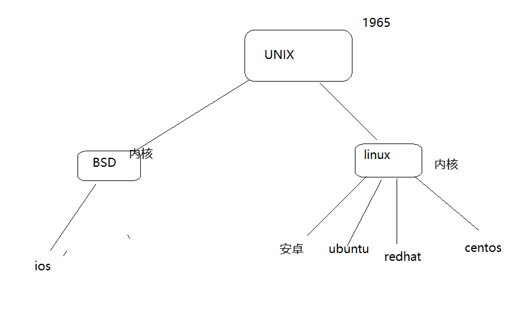

1 虚拟机 VMware
在一台主机之上虚拟新的一台主机,
虚拟出来的新的主机和原来主机功能一样
原主机windows -> 任意的操作系统主机
ctrl+shift + '+' 三个按键,是将终端放大
ctrl+'-' 是将终端缩小
2 ubuntu

3 linux文件目录
windwos有多个驱动器(树)
linux只有一棵树 根目录/
windows下的目录以反斜杠分割
linux下以/分割目录
相对路径: 相对于当前,按个文件在那个目录
/home 家目录
/home/itheima 是itheima用户的主目录
/root root超级管理员用户 超级管理员用户的主目录
4 查看虚拟机ip命令
ifconfig

5 使用xshell连接ubuntu终端
新建


6 文件类型
ls 查看当前目录下的文件,显示在终端
和windows dir命令一样
普通文件

ls -l查看文件 ,第一个字母,代表了文件的类型,-就是普通文件
d 是目录文件
c 字符设备文件
b 块设备文件
l 连接文件
7 文件的权限
linux下的文件权限分为三组
文件的所有者权限 文件的同组用户权限 文件其他用户使用权限
权限有三种
r 可读 查看权限
w 可写 修改权限
x 可执行 运行权限

所有者权限 rwx
同组用户权限 rwx
其他用户权限 r-x
chmod 修改文件权限
7 111 rwx
5 101 r-x
3 011 -wx
chmod 666 a.c //修改a.c的权限为 rw- rw- rw-
chmod +x b.c //给三种权限都加上可执行权限 (rw-r---w- =>> rwxr-x-wx)
 第一个
第一个第一个itheima代表是 文件的所有者
第二个itheima 是文件所在的组
8 命令
命令的格式
cmd [-op] [arg]
[-op] [arg] 选项和参数都是可选的
一般使用man去查看命令的选项
man 1 命令
man 2 系统调用函数
man 3 库函数
Tab键可以自动补全敲的命令或参数
9 ls命令
ls 显示指定目录下的文件名
ls ls ./
ls /bin 显示/bin目录下的文件
ls的选项
-l 列表显示
-a 显示所有包括隐藏文件
-h 人性化显示
ls -l /bin 列表显示/bin目录下的文件
ls -a /bin 显示/bin目录下的所有文件
10 clear 清屏
11 cd 切换目录
cd . 切换到当前
cd ../ 切换到上一级目录
相对路径切换

绝对路径切换

12 查看当前工作路径
pwd

13 重定向
>

14 cat
cat a.c
将a.c显示到终端
15 分屏显示
more a.txt 将a.txt分页显示
histroy | more //将histroy的命令执行结果存放到管道,将在管道的内容作为more的参数
16 创建目录
mkdir c++13 //在当前目录下创建一个c++13文件夹
mkdir -p ./a/b/c //在当前目录下递归创建文件夹a/b/c
17 rm 删除文件
rm 文件的路径名
rm -rf 文件的路径名 //强制删除文件,删除之后不可恢复,所以这个命令需要谨慎
18 grep 查找字符在文件的所在位置
grep一般格式为：
grep [-选项] ‘搜索内容串’文件名
19 拷贝文件
cp 源文件的路径名 目的文件的路径名
20 tar 打包解包
tar 选项 打包解包的文件 file
选项:
-c 打包
-x 解包
-f 需要的文件
-v 显示过程
//将a.c b.c c.c打包生成abc.tar文档

//将abc.tar 解包
tar -xf abc.tar -C 需要解压到的目的地

压缩:
gzip格式压缩
gzip [选项] 需要压缩解压的文件
选项:
-r 压缩
-d 解压
压缩

解压缩:

一步解压缩:

abc.tar.gz -- gzip压缩的 tar加的选项是-z
abc.tar.bz2 -- bzip2压缩 tar加的选项是-j
gzip格式打包压缩

gzip格式解压缩解包

21 vi 编辑器
vi 打开的文件(存在直接打开,不存在创建在打开)

22 编译源代码
demo.c
gcc demo.c -o demo
运行
./demo